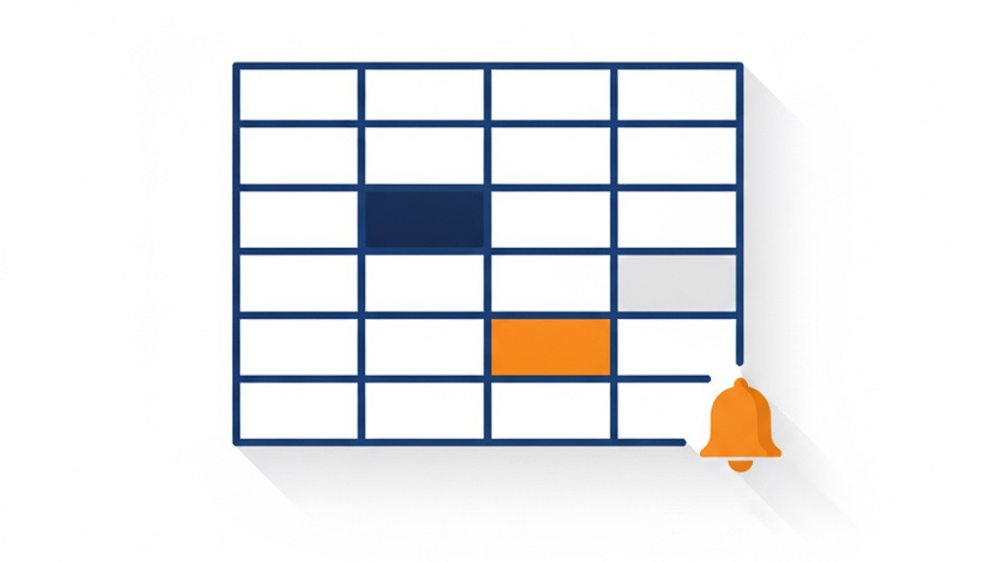

広告が悪化していないか、毎朝“表”で分かる
Amazon広告を「ランク分け」と「自動通知」で運用する
業務改善コラム ／ Amazon・仕組み化・自動化 ／ 読了目安：約11分
Amazon広告で一番こわいのは、赤字そのものより「気づいたら、もう手遅れだった」です。気づくのが2週間遅れれば、その2週間ぶんの広告費はもう戻りません。
私たちは自社ブランドの運用で、これを「仕組み」で防いでいます。広告に入れる候補をランク（S/A/B/C）で仕分け、稼働中の配信先（広告を出しているキーワードや商品）は毎朝、Slackに“悪化が見える表”が自動で届く。この記事では、その全体像と通知のイメージを、数値は伏せながらできるだけ具体的に公開します。
1. 「気づいたら手遅れ」を、仕組みで防ぐ
広告の数字は、毎日少しずつ動きます。昨日まで良かったキーワードが、今日から静かに悪化し始める。人が毎日全配信先を目視チェックするのは現実的ではなく、たいてい月末にまとめて見て「うわ、ここ赤字だった」と気づく——これが一番もったいないパターンです。
だから私たちは、「頑張って毎日見る」ではなく、「悪化したものだけが、向こうから毎朝目の前に出てくる」状態を作りました。人の根性ではなく、表と通知に見張らせるのです。
2. 全体像：日次で“見張り”、週次で“組み替え”
運用は「日次」と「週次」の2つのリズムで回しています。役割がはっきり分かれているのがポイントです。
🔁 日次（毎朝9:00）＝見張り役
昨日の結果を取得し、悪化した配信先を表にしてSlackへ自動通知。「今日、手を打つべきものはどれか」だけが分かる。
🗓 週次（月曜）＝組み替え役
先週の打ち手を検証し、学びを反映。新しい候補をランクから選んで投入提案。承認したものだけ実行する。
日次は「守り（悪化を止める）」、週次は「攻め（伸ばす候補を入れる）」。この2層に分けることで、毎日バタバタ手を入れて余計に壊すことを防いでいます。

3. ランクで候補を仕分ける（自動判定＋手動マーク）
「次に広告へ入れるキーワード／商品」の候補は、放っておくと毎週バラバラに湧いてきます。そこで全候補を実績データで4段階のランクに自動判定し、一覧表に貯めています。
| ランク | 意味 | ざっくりの基準 | やること |
|---|---|---|---|
| S | 確実に儲かる超優良 | 実績で受注あり・ACOSが低い | 即投入 |
| A | 高効率・優先候補 | 受注あり＆効率良 or 検索シェア高 | 1〜2週で投入 |
| B | 中効率・検討対象 | 受注はあるが様子見ライン | 予算余裕があれば |
| C | 配信あり・成果なし | クリックはあるが受注ゼロ等 | 投入しない／要見極め |
ただし自動判定だけだと、「数字上は優良でも、絶対に入れたくないもの」（自社商品と関係ない雑多なキーワード等）が毎週また候補に上がってきます。そこで人にしか分からない判断を“手動マーク”として永続保存しています。
🌟 VIP（必ず入れる）
必ず入れる（自社の商品名やブランド名で検索された語など）。毎週「即投入」で最優先提案。
🚫 EXCLUDE（除外）
絶対に入れない。一度マークすれば二度と候補に浮上しない。
⏸ HOLD（保留）
今は保留（季節性・商品ページの改善待ち等）。提案はされるが保留表示。
4. 毎朝Slackに届く「悪化が見える表」
稼働中の配信先は、毎朝9:00に前日結果を集計してSlackへ自動投稿します。ポイントは、「昨日まで問題なかったのに、今日から悪化したもの」を🆕新規として最上段に分離していること。継続中の問題はその下にまとめ、見るべきものが埋もれないようにしています。だから「今日まず見るべき1件」が毎朝はっきりします。
日次レポートの構成
- 昨日の速報：売上・広告費・TACOS（広告費が全体売上の何割かを示す数字）・ACOS（アカウント横並び）
- 🆕 新規の警告：今日から悪化した配信先（最重要）
- 📋 継続中：赤字・注意が続いているもの（全件）
- 📈 好調：伸びている上位3件
- ⏳ 経過観察：変更後14日以内のもの（次章）
- 異常値の警告：数字が突然跳ねた箇所
※ 昨日のデータが未反映ならレポートは送らず、取れてから送る設計。古い数字で判断しないためです。
毎朝Slackに届く日次レポート（イメージ）
※ 表示はイメージ。実際の売上・広告費・ACOS等は伏せています。ASIN＝Amazonの商品ごとの管理番号、ROAS＝広告費1円あたり何円の売上になったかを示す数字です。
5. 経過観察の表：変えた後を“14日”追う
入札やキーワードを変えたら、「変えっぱなし」にしないのが鉄則です。変更した配信先は14日間、毎朝この表で追跡します。変更前の30日ACOSを基準に、昨日／7日／14日の推移と損益分岐（これを超えると赤字になる線）を並べ、改善したか・赤字が続くかを毎日ひと目で判定できるようにしています。
| 配信先 | 入札(旧→新) | 変更前ACOS | 昨日 | 7日 | 14日 | 損益分岐 | 判定 |
|---|---|---|---|---|---|---|---|
| キーワード ○○○ | ¥○→¥○ | ○% | ○% | ○% | ○% | ○% | ✅改善 |
| ASIN ○○○ | ¥○→¥○ | ○% | ○% | ○% | — | ○% | ⏳観察中 |
| キーワード ○○○ | ¥○→¥○ | ○% | ○% | ○% | ○% | ○% | ❌赤字継続 |
判定は機械的です。ACOSが損益分岐を下回れば✅改善、14日たっても赤字なら❌、データ不足なら観察延長。さらに変更後3〜5日の段階で「広告の表示回数だけ急増」「表示順位が急騰したのに受注ゼロ」などの危険な兆候を見つけたら、その場ですぐ通知し、悪化が固まる前に手を打ちます。
（この“悪化する前に止める”早期警告の考え方は、別記事 「広告の不調を『悪化する前』に止める」 で詳しく解説しています。）
6. 週次の流れ：仮説→実行→検証→学習
週次は、ただ候補を入れるだけではありません。毎週「先週の打ち手は当たったか」を検証してから、次の手を決める——回すほど提案が賢くなる仕組みにしています。
① 学習
先週の変更を測定し、的中率と学びを記録
② 計画
学びを踏まえランクから候補を提案（仮説つき）
③ 実行
承認したものだけ自動でAmazon側に反映
④ 検証
翌週また①へ。当たり外れを蓄積
各提案には「仮説・想定リスク・成功基準（例：7日後に受注○件以上）」を必ず添えます。安全側に逃げず、リスクを認識したうえで取る。そして外れた仮説こそ記録して、次から同じ失敗を避ける。「高評価だが受注が少ないものを一気に上げると暴落する」といった失敗の型は、ルールとして書き出し、自動で警告が出るようにしています。
7. 他社でも使える「悪化を見える化する」型
Amazon広告の話で書きましたが、この型は在庫・経理・店舗の数字管理でもそのまま使えます。
「見にいく」をやめ、「届く」に変える
毎日全部を目視しない。悪化したものだけが向こうから出てくる仕組みにする。
「新規の悪化」と「継続の問題」を分ける
今日から悪くなったものを最上段に。継続はまとめて、見るべきものを埋もれさせない。
候補をランクで仕分け、人の判断を残していく
自動判定＋手動マークで、同じ判断を毎回くり返さない。判断が資産になる。
変えたら“追う”。基準（損益分岐）と一緒に見る
変更後を一定期間、毎日追いかける。良し悪しは基準線と並べて機械的に判定。
8. まとめ
- 広告で一番こわいのは「手遅れ」。だから悪化が毎朝“表”で届く仕組みにする。
- 運用は日次（守り）＝悪化の見張りと週次（攻め）＝候補の組み替えの2層に分ける。
- 候補はランク（S/A/B/C）＋手動マーク（必ず入れる／除外／保留）で仕分け、人の判断を資産にする。
- 変更は「変えっぱなし」にせず、損益分岐と並べて14日追う。危険な兆候はすぐ通知。
- 週次は仮説→実行→検証→学習の繰り返し。外れた仮説も記録して提案の精度を上げ続ける。
「広告、気づいたら悪化してた」をなくしたい方へ
ランクでの候補管理から、毎朝の“悪化が見える表”のSlack自動通知、週次の検証の流れまで、お客様のアカウントに合わせて設計します。
私たち自身がAmazon物販の当事者として毎日使っている仕組みを、現場で回せる形でお渡しします。まずは無料相談でお気軽にどうぞ。